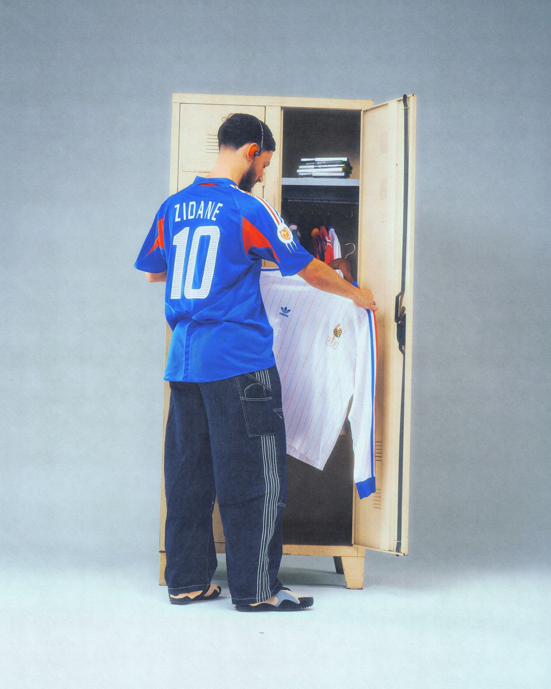
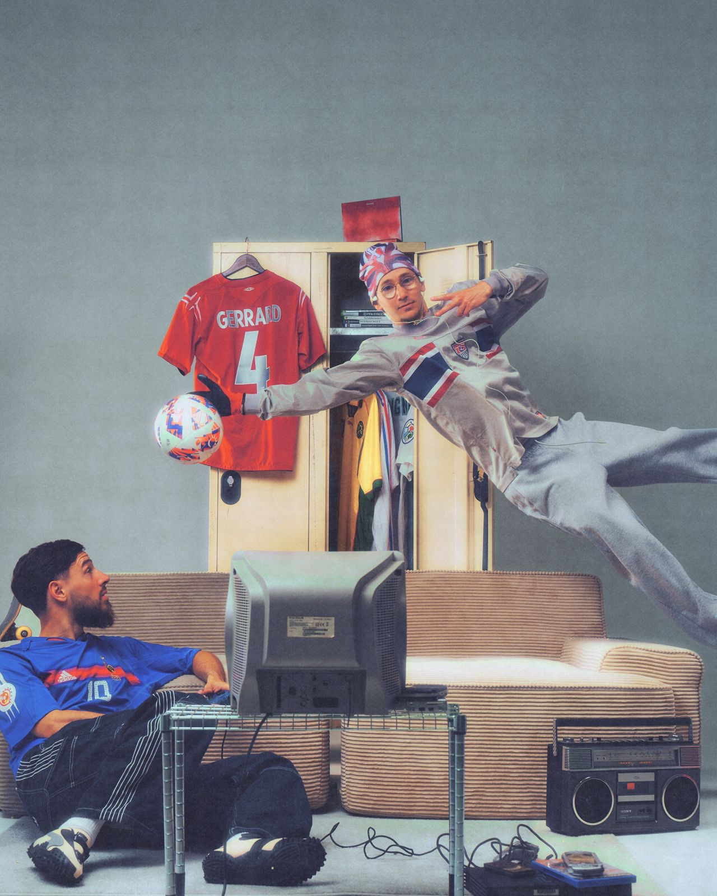
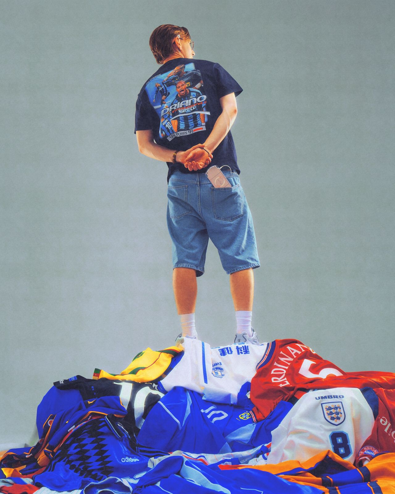
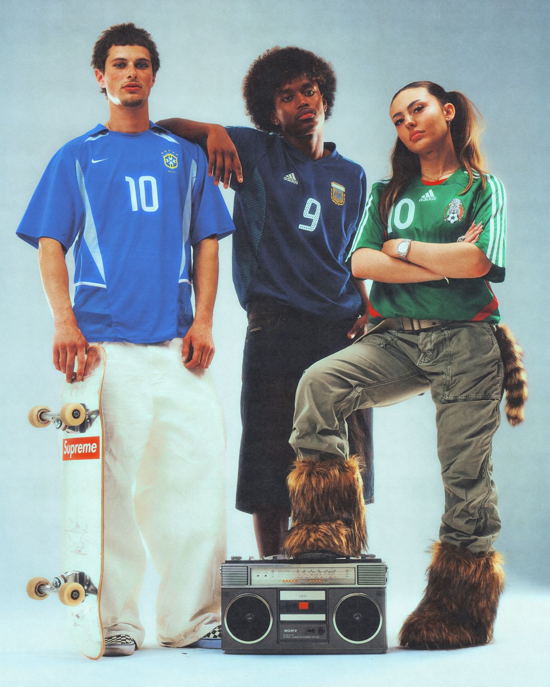

Le projet
Le Brésil 2002, les nuits blanches sur San Andreas, la PS2 qui tourne en boucle. Une campagne pour retrouver l'énergie d'une génération.
Cult Kits Ltd possède sans doute l'une des plus belles collections de maillots vintage au monde. Pour leur campagne, Penalty Studio™ a voulu raconter une époque plutôt que de simplement shooter des maillots : la fin des années 90 et le début des années 2000, leurs codes visuels, leur grain, cette esthétique Y2K qui revient si fort aujourd'hui.
Direction artistique, production, lumière, post-production : tout a été pensé en interne pour que chaque image respire cette génération, du casier de vestiaire à la télé cathodique, en passant par la boombox et la pile de maillots.


Mon rôle
Assistante de production au sein d'un projet entièrement pensé en interne.
Aux côtés de l'équipe de production, j'ai participé à la préparation et au bon déroulement du shooting : organisation, coordination du casting et de l'équipe, suivi du plateau, et attention portée au décor pour que chaque détail (objets, maillots, accessoires d'époque) serve l'univers Y2K.
Un projet où le studio a mis beaucoup de lui-même, et où j'ai pu voir une direction artistique forte prendre vie de bout en bout.


Crédits
- Client
- Cult Kits Ltd
- Agence & production
- Penalty Studio™
- Direction artistique
- Paul-Loup G.
Maxime Sebti
Anthony Meghzel - Photographie & post-production
- Maxime Sebti
- Lumières
- Maxime Sebti
Axel R. - Stylisme
- Paul-Loup G.
Maxime Sebti - Cast
- PL
Nabs
Guigui
Lola
Mario
Julio - Production
- Paul-Loup G.
Guillaume Dumont - Assistante de production
- Lola Verhas
- Lieu
- by Galerie
- Merci à
- Rob Kocur
Nico Honeyman